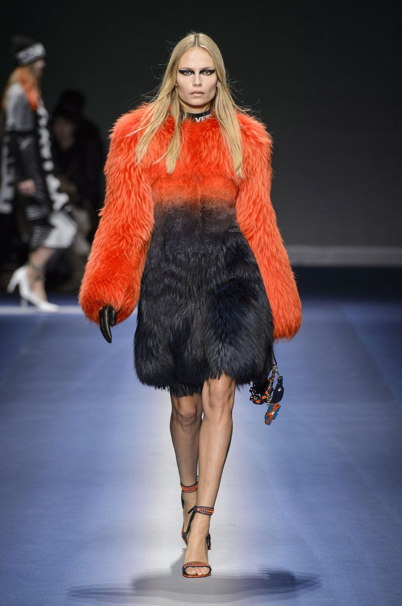
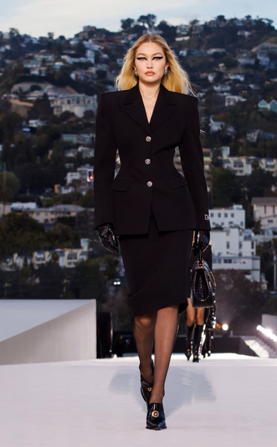

Nossos produtos
-

Peças raras na semana de moda em Milão
Depois do emblemático desfile em Milão e do lançamento de t-shirts com as suas ilustrações, a Farfetch disponibiliza 500 peças originais do designer italiano em colaboração com Wiliam Vintage.
Comprar -

Acessorios Versace
No dia 2 de dezembro, a Versace apresentou o seu desfile da coleção Outono 2019. Além das passarelas reunirem as modelos que estão super em alta no momento, a plateia estava cheia de estrelas igualmente famosas. Além disso, se destacaram também no evento os acessórios Versace que complementaram perfeitamente os looks modernos e retrôs
Comprar -

Outono-inverno 2023
Esta coleção parte do entendimento e valorização do corpo que sempre tivemos no coração na Versace. Aplicamos as lições aprendidas no Atelier prêt-à-porter (pronto para vestir): a construção, a alfaiataria, a beleza do tecido
Comprar